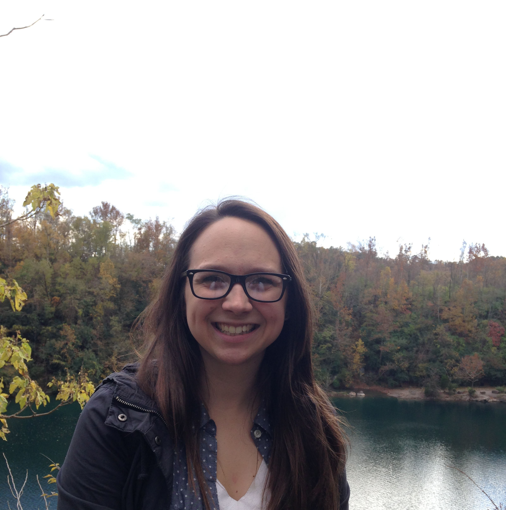

About Me
I am Charlotte Asencio a reluctant Social Worker, avid coffee drinker, Spanish speaker, news follower, aspiring web developer, and hater of bio writing.
I am currently a Victim Services Coordinator working at a District Attorney’s Office. I have a background in Social Work and have spent my career so far working with government and non-profit organizations in the U.S. and Guatemala. While the values that drove me to pursue a career in Social Work and my commitment to social justice remain unchanged, the manner in which I hope to affect these things has evolved over the years.
I am currently learning web development and am excited to apply these new skills to my current passions and find a new passion along the way.
Connect with Me